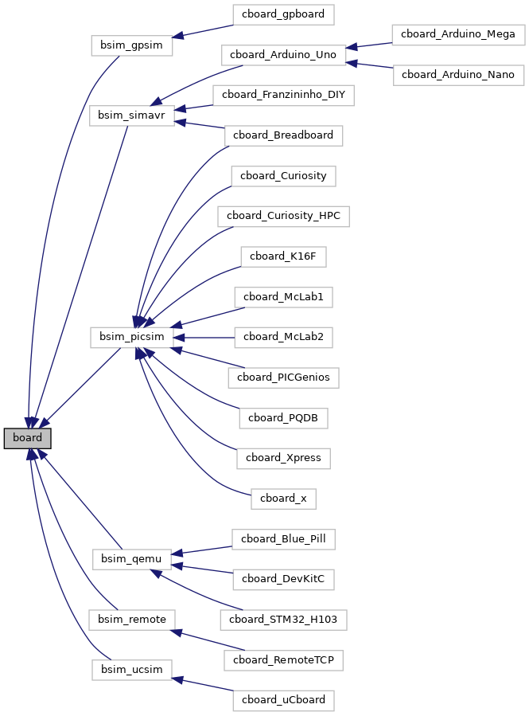

Chapter 4
Boards
PICSimLab currently supports five backend simulators: picsim, simavr, uCsim, gpsim and qemu (stm32 and esp32).
The Figure below shows which boards are based on which backend simulator:

The below table show the supported debug interface of each simulator:
| Backend | Debug Support |
| picsim | see the section MPLABX Integrated Debug |
| simavr | see the sections MPLABX Integrated Debug and remote avr-gdb Debug |
| qemu-stm32 | see the section remote arm-gdb Debug |
| qemu-esp32 | see the section remote esp32-gdb Debug |
| uCsim | see the section uCsim remote console (telnet) Debug |
| gpsim | none yet |
4.1 Arduino Mega
4.2 Arduino Nano
4.3 Arduino Uno
4.4 Blue Pill
4.5 Breadboard
4.6 Curiosity
4.7 Curiosity HPC
4.8 ESP32-C3-DevKitC-02
4.9 ESP32-DevKitC
4.10 Franzininho DIY
4.11 K16F
4.12 McLab1
4.13 McLab2
4.14 PICGenios
4.15 PQDB
4.16 Remote TCP
4.17 STM32 H103
4.18 X
4.19 Xpress
4.20 gpboard
4.21 uCboard
4.2 Arduino Nano
4.3 Arduino Uno
4.4 Blue Pill
4.5 Breadboard
4.6 Curiosity
4.7 Curiosity HPC
4.8 ESP32-C3-DevKitC-02
4.9 ESP32-DevKitC
4.10 Franzininho DIY
4.11 K16F
4.12 McLab1
4.13 McLab2
4.14 PICGenios
4.15 PQDB
4.16 Remote TCP
4.17 STM32 H103
4.18 X
4.19 Xpress
4.20 gpboard
4.21 uCboard